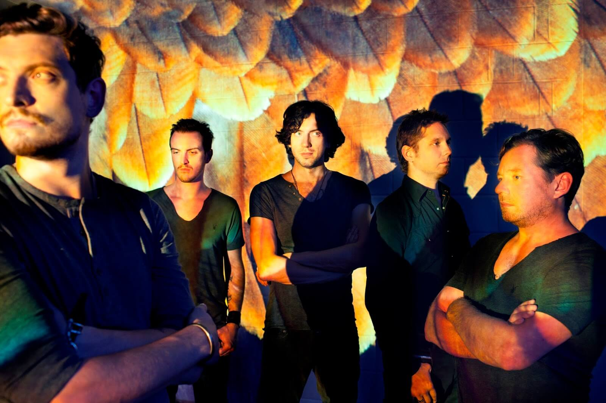
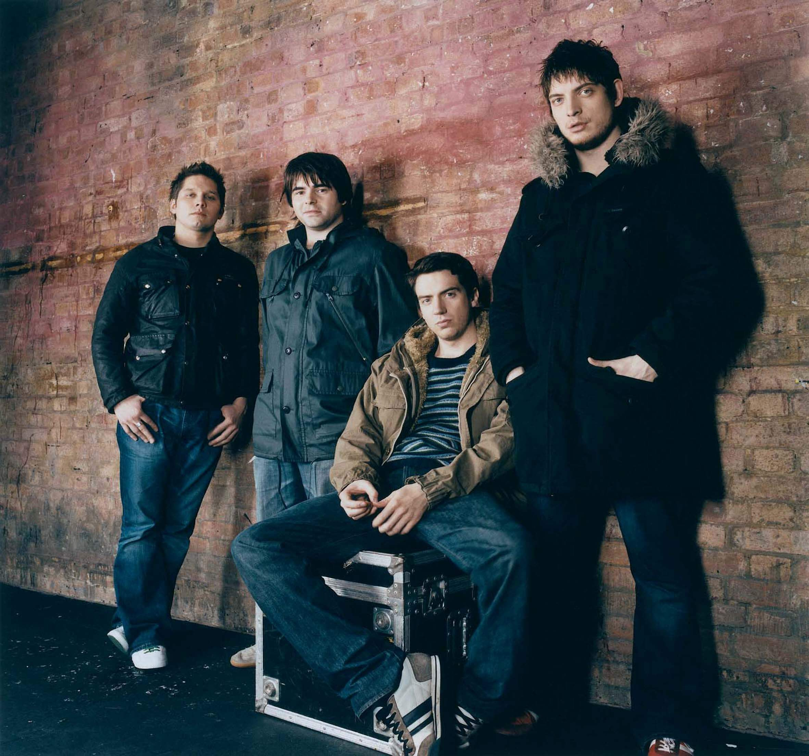

 Группа «Snow Patrol» была основана в конце 1990-ых годов и является сегодня ярким представителем ирландской альтернативной музыки. Коллектив играет музыку в таких стилях как панк и гранж. В 1998 году музыканты выпустили свой дебютный альбом под названием «Songs For Polar Bears». В тот период своей творческой деятельности их музыка была резкой и агрессивной. Команда «Snow Patrol» порой смешивала несовместимые стили, еще больше уходя в свой альтернативный мир. В 2003 году на помощь группе пришел продюсер Гаррет Ли, известный по работе с Эминемом. Благодаря его профессионализму и творческому подходу, «Snow Patrol» стала одним из наиболее прогрессивных музыкальных коллективов Британии. Но для того, чтобы добиться успеха, музыкантам пришлось немного изменить себе. Гаррет Ли направил их по более коммерческому пути, композиции стали немного мягче, кое-где появились танцевальные мотивы и модные фишки.  Мировую известность группа получила с выпуском в 2006 году альбома Eyes Open, который был растиражирован в количестве 4,7 миллиона экземпляров по всему миру. Snow Patrol были выдвинуты в трех номинациях BRIT Awards и выиграли пять в Meteor Ireland Music Awards. По всему миру группа продала более 7 миллионов альбомов. В 2008 году последовал следующий альбом, который закрепил успех группы. Потом поклонники ждали целых три года и дождались, наконец, в 2011 новый альбом под названием «Fallen Empires». А мы готовы отправить в столицу Ирландии, возможно, именно вас, да не просто так, а с сольным концертом. Запишите кавер на песню любого ирландского музыканта или группы, снимите это на видео, опубликуйте в youtube, а ссылку пришлите в личные сообщения на странице Просто Радио в Facebook https://www.facebook.com/ProstoRadi.O.NewRock/ или на irishtrue.vgorode.ua. И выиграйте Рокстар Уикенд в столице Ирландии!
конкурс